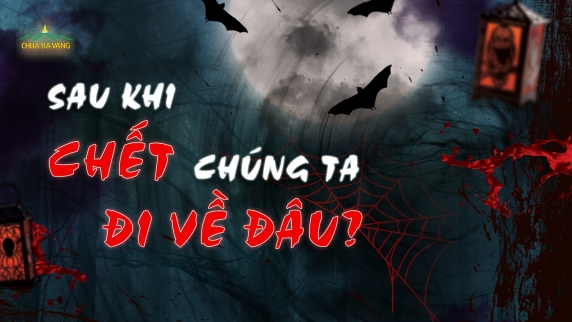

CHÙA BA VÀNG

Sau khi chết chúng ta đi về đâu? Làm sao để vong linh được siêu thoát?
Linh hồn có tồn tại thật không? Sự thật về linh hồn sẽ được giải đáp trong bài viết dưới đây!
Những câu nói hay về Vu Lan báo hiếu, status Vu Lan dành tặng cha mẹ
Admin xin gửi tặng bạn những câu nói hay về Vu Lan báo hiếu, status (trạng thái mạng xã hội) ý nghĩa, chứa đựng những tâm tư tình cảm để gửi đến...
Hướng dẫn cách cầu siêu cho thai nhi tại chùa Ba Vàng
Lễ Cầu siêu vong linh thai nhi giúp các gia đình có cơ hội được sám hối lỗi lầm, hóa giải oán kết với những thai nhi đã phá bỏ.
Những câu nói hay về Vu Lan báo hiếu, status Vu Lan dành tặng cha mẹ
Admin xin gửi tặng bạn những câu nói hay về Vu Lan báo hiếu, status (trạng thái mạng xã hội) ý nghĩa, chứa đựng những tâm tư tình cảm để gửi đến...